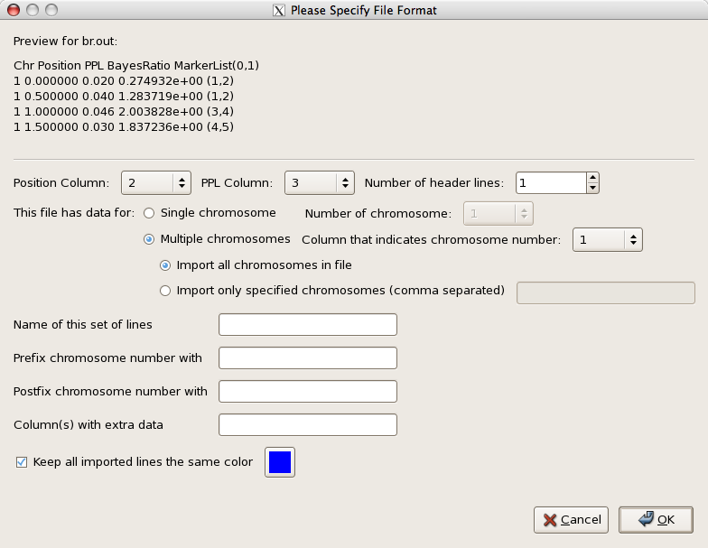

Kelvin V2.1.0
Overview
Kelvin is a flexible program for analysis of genetic data. It is
based on the PPL framework1, 2,
3, and produces output on the posterior probability (0,..,1)
scale. Primary outcome statistics include the PPL (posterior probability of linkage (L)),
as well as various forms of the PPLD (posterior probability of linkage disequilibrium (LD)).
In the context of analysis between a marker and a SNP, the PPLD models allelic association
due to very close genomic proximity. Versions of the PPLD include the PP[L&LD] (posterior
probability of L and LD); the PPL(LD) (posterior probability of L allowing for LD); and the
PP[LD|L] (posterior probability of LD given L).
Kelvin handles the trait model by formulating an underlying
likelihood in terms of a vector of trait parameters; and integrating over all constituent
trait parameters. The standard dichotomous trait (DT) likelihood is written in terms of a
single disease allele frequency (for a two-allele disease locus), a vector of three
penetrances (one for each disease genotype), and the admixture parameter of
Smith4 (to allow for heterogeneity within data sets).
Quantitative trait (QT) models are parameterized as mixtures of continuous distributions,
one for each underlying disease genotype. At present QT models can be configured as mixtures
of normal distributions (three means and three variances) or as mixtures of chi-square
distributions (three d.f. parameters). Also available is a QT threshold (QTT) model, which
adds an additional threshold parameter to the likelihood, allowing a mix of binary
(affected/unaffected) and QT phenotypes within the same pedigrees.
Kelvin can accept as input multigenerational pedigree data, nuclear
families, "trios" (one affected child with two parents), and case-control data. There is no
need for the user to specify the data structures when running the program, and all models
can be applied to any structure. Limitations include application to very large pedigrees
for which the exact likelihood calculation may be intractable; and at present, multipoint
analyses involving large numbers of markers. (At present Kelvin is
based on the Elston-Stewart algorithm5; implementation of the
Lander-Green algorithm6 is underway.) Of course running the
PPL itself on case-control or trio data alone will not yield any information, because these
structures do not contain information on recombination in the absence of LD.
Kelvin handles potential inter-sample heterogeneity via Bayesian
sequential updating. For this purpose, the user submits data in separate subsets. These can
be formed based on any clinical and/or demographic information which seems likely to demarcate
more homogeneous subsets of data. Sequential updating can and should also be used when
considering new data, "updating" previously calculated Kelvin results
with the newly obtained data. That is, rather than adding the new data to the old data and
recomputing Kelvin results based on the 'pooled' data set,
Kelvin is designed to sequentially update previously obtained results
with new data as these become available. Kelvin then integrates over
the trait parameters separately in each data subset, allowing the possibility that underlying
trait parameters do not have the same values across subsets. (It is advisable to introduce
new data in "chunks," that is, not one family at a time, but in batches
7).
Kelvin also provides various options for allowing the pentrances
(or in the case of QTs, means and variances or d.f.) to depend upon covariates. Any
classification can be used for this purpose, such as age classes, sex, or clinical features
(e.g., "strict" versus "broad" diagnoses). To implement such an analysis the user assigns
individuals to liability classes based on the covariate, and Kelvin
internally integrates over the penetrances separately across the classes.
Kelvin can also perform analyses allowing for imprinting, or
penetrances dependent on parent of origin. Finally, this feature can be used to implement
two-locus (2L) epistasis analyses based on measured genotypes at, e.g., an associated SNP,
by allowing the penetrances to depend on SNP genotype.
The Release Notes describe the major changes in this version
and should be reviewed by all users. The Quick Start gives a
brief introduction to preparing the input
files, running Kelvin, and graphing and interpreting the output.
Additional technical details on the underlying statistical methods can be found in the
following references:
Vieland VJ. Bayesian linkage analysis, or: How I learned to stop worrying and love the
posterior probability of linkage. Am J Hum Genet 63(4):947-954, 1998.
Wang K, Huang J, Vieland VJ. The consistency of the posterior probability of linkage.
Annals Hum Genet 64(Pt 6):533-553, 2000.
Vieland VJ, Wang K, Huang J. Power to detect linkage based on multiple sets of data in
the presence of locus heterogeneity: Comparative evaluation of model-based linkage methods
for affected sib pair data. Hum Hered 51(4):199-208, 2001.
Logue MW, Vieland VJ. A new method for computing the multipoint posterior probability of
linkage. Hum Hered 57:90-99, 2004.
Yang X, Huang J, Logue MW, Vieland VJ. The posterior probability of linkage allowing for
linkage disequilibrium and a new estimate of disequilibrium between a trait and a marker.
Human Hered 59:210-219, 2005.
Vieland VJ. Thermometers: Something for statistical geneticists to think about. Human
Hered, 61:144-156, 2006.
Bartlett CW, Vieland VJ. Accumulating quantitative trait linkage evidence across multiple
datasets using the posterior probability of linkage. Genet Epidem, 31(2):91-102, 2007.
Wang H, Segre AM, Huang Y, O'Connell J, Vieland VJ. Fast computation of human genetic
linkage. Proceedings of IEEE 7th Symposium on Bioinformatics and Bioengineering (BIBE
2007), pages 857-863, 2007.
Govil M, Vieland VJ. Practical considerations for dividing data into subsets prior to PPL
analysis. Hum Hered 66:223-237, 2008.
Seok S, Evans M, Vieland VJ. Fast and accurate calculation of a computationally intensive
statistic for mapping disease genes. J Comput Biol 16(5):659-676, 2009.
Release Notes
V2.1 is a major release of Kelvin that provides significant
improvements in capabilities and performance. Users of previous versions will want to
review the changes in this section before installing and using the new version.
- The names and formats of directives in the configuration file have changed significantly. See the
directives page for a complete reference.
The Perl script convertconfig.pl is provided to help convert existing configuration files
to the new format. It can be invoked by typing:
_$ convertconfig.pl <old.conf >new.conf
Be sure to review and modify the new configuration file as required, since not all aspects
of old configurations are supported.
- Output file format has changed significantly, so if you have written
scripts or programs to process that output, you will want to review the new formats
in the Contents Of Output Files section.
- The default mechanism of integration over constituent trait parameters is now adaptive
instead of iterative, leading to significant improvements in performance and accuracy.
- Pedigree binning and counting is now performed by default where possible. The PedCount.pl
Perl script will be invoked transparently by Kelvin when applicable,
but can also be used separately. A full description of command line syntax is available by typing:
_$ PedCount.pl --help
- Individuals can now be divided into groups with separate sets of penetrance values.
See the section on Covariate-Dependence for details.
- Limited support for considering epistasis is now provided, see the section on
Simple Trait vs Epistasis for details.
- Utilities for preparing the configuration file and graphing the results of analyses are now provided.
Separate documentation is provided for both gKelvin and
graphApp as Readme.txt
files in their distribution directories. These utilities
have separate installation requirements and procedures as well.
- Progress reporting now provides configurable fixed-frequency updates so as to
eliminate the output "feast or famine" effect across differing analyses. See the
Running The Programs section for details.
Quick Start
This section provides an overview of getting, building and running
Kelvin. Detailed instructions on each point can be found
below.
Installing Kelvin
These instructions assume that Kelvin is being installed on a Linux or
Unix system of recent vintage, with a GCC compiler and that the user is familiar with the
command line environment on that system. First, unpack the distribution archive with
gunzip and tar, and move to the newly-created kelvin-<version> directory.
If you'd like to try to use one of the prebuilt executables, simply type make install-prebuilt,
and if you don't receive any errors, you're done. If no prebuilt executable was available, or you want to
build your own version anyhow, follow these steps:
- Edit the Makefile if desired, and then build Kelvin by running make.
- Validate the executable by running make check. These tests should take less than a minute to perform.
- You can perform a much more extensive set of tests if you wish by running make test. These tests
will take anywhere from 30 minutes to several hours. You can interrupt them at any time by
typing CTRL/C.
- Install the executable and supporting scripts by running make install.
Note that the default installation directory is /usr/local/bin, which will require the installer to
have administrative privileges. To install in an alternative directory, e.g. ~/kelvin for
individual use, edit Makefile and replace the line BINDIR=/usr/local/bin with
BINDIR=~/kelvin or some other path, and then replace the lines GROUP=root and USER=root
with your group and user name before issuing the make install command.
Preparing Input Files
Kelvin requires four input data files. In these examples, we show an affected sib-pair
family and three markers:
- Pedigree File - This is a pedigree file containing phenotypic and genotypic
information. It should be in
post-Makeped
format.
1 1 0 0 3 0 0 1 1 1 2 2 1 2 1 1 Ped: 1 Per: 1
1 2 0 0 3 0 0 2 0 1 1 1 1 2 1 1 Ped: 1 Per: 2
1 3 1 2 0 4 4 2 0 2 1 2 2 2 1 1 Ped: 1 Per: 3
1 4 1 2 0 0 0 1 0 2 2 1 1 1 1 1 Ped: 1 Per: 4
- Locus (Data) File - Describes column order in the pedigree file starting with
the position of the trait locus.
T Trait
M MRK_1
M MRK_2
M MRK_3
- Frequency File - Names the markers listed in datafile.dat and enumerates the allele
frequencies.
M MRK_1
F 0.3 0.7
M MRK_2
F 0.35 0.65
M MRK_3
F 0.7 0.3
- Map File - Gives the chromosomal position of the markers.
CHROMOSOME MARKER POSITION
3 MRK_1 0.33
3 MRK_2 0.66
3 MRK_2 0.99
Creating A Configuration File
There are two ways of creating a configuration file. If you are using a xterm or other X-windows-compatible
mechanism to access your system, you can use gKelvin, which is a simple graphic interface that will lead
you thru the necessary steps and ensure that your configuration is syntactically correct and internally
consistent. If you cannot or do not wish to use gKelvin, you can prepare your configuration file by hand
with any text editor.
The configuration file is generated from gKelvin. The
GUI provides options for different types of analyses and will write out kelvin.conf.
After starting gKelvin, open a new file. You may then select
"Two point" or "Multi-point". Based on that choice, you will be presented with forms
for setting two-point options, or
multipoint options. When you've finished,
save the configuation file.
Creating a Configuration File
Kelvin takes all of its configuration information from a single file specified on the
command line. This file is composed of directives that describe the analysis to be performed,
and the locations of supporting data files. The graphical configuration tool
gKelvin will create the configuration for you.
Kelvin supports a wide variety of analyses. The principle options which can be selected in
gKelvin are listed below. With certain exceptions, the user is free to select any combination
of options. gKelvin will also indicate when options are not available in combination with one
another.
Two-point vs. multipoint analysis
For linkage analysis, the user can select either; for LD analysis, only the two-point
option is available. In both cases, the user can choose to use either sex-averaged or
sex-specific marker maps.
Marker-marker analysis
This option is available only for two-point analyses, but can be used to estimate either
of linkage or LD distances between pairs of markers. The user can opt to consider all pairs
markers or only pairs which are adjascent to one another in the map file.
Linkage Disequilibrium (LD, or association) analysis
Unless specifically instructed to allow for LD, Kelvin assumes linkage equilibrium between
the trait and the marker or genomic location. For two-point analyses, it is possible to
allow for trait-marker LD.
Trait models
Kelvin handles dichotomous traits (DT) or quantitative traits QT). For QTÕs the user can
select the functional form of the trait distribution as either normal or chi-square. In
addition, a QT threshold model (QTT) can be specified. In all cases Kelvin internally
integrates over the parameters of the trait model, so there is no need to specific trait
values or a mode of inheritance.
Imprinting
The imprinting option allows penetrances (or the corresponding QT parameters) to depend on
parent of origin.
Covariate-Dependent Penetrances (or corresponding QT parameters)
When the user assigns individuals in a pedigree to "liability classes," Kelvin allows the
penetrances (or QT parameters) to depend upon class assignment.
Two-Locus Epistasis
Kelvin has special routines for handling two-locus analysis when supplied with genotypes at
one of the loci (Locus 1), by allowing the penetrances (or corresponding QT parameters) to
depend upon genotypes at Locus 1 when considering linkage and/or LD to other loci.
Running Kelvin
Run kelvin configfile. The text that Kelvin emits
as it runs contains important information, and is necessary to identify the cause if the
run fails.
Sequential Updating
One of Kelvin's distinctive features is the way in which it is
designed to handle the combined analysis of multiple data sets or data subsets, using
sequential updating. This is done by calling
calc_updated_ppl. This program takes as input the
output from Kelvin analyes (in particular, it uses the br.out
files). Sequential updating works with any Kelvin options, however,
it is important that all files being used as input to calc_updated_ppl should
reflect the same sets of options. Users interested in running calc_updated_ppl on output
generated by older versions of Kelvin must use the br.out conversion script
convert_br.pl.
Graphing The Results
To run the graphing application, at a command prompt, goto the
directory where the source files are
located, and type
python graphApp.py
To import data from a Kelvin output file:
1. Click on File->Import Data on the menu bar.
Alternatively you can click on the Import Text icon on the toolbar
.
2. A dialog box will appear asking for the name of the file to be opened.
Choose the file containing the data, and click on the Open button.
3. Another dialog box will appear, that asks about the specific format
of the file. A screenshot of this dialog box is shown below. At
the very top a preview of the file showing the first five lines of the
file is shown.

4. Specify the Position column in the first drop down menu box.
The values of this column will be used as the x-value of points.
5. Specify the PPL column in the second drop down menu box. The values
of this column will be used as the y-value of points.
6. Specify the number of header lines at the top of the file.
Those lines will be skipped when processing the file.
7. Select whether the file contains data for just one chromosome, or
multiple chromosomes. If Single Chromosome is chosen, then the number
of that particular chromosome needs to be specified. If Multiple
Chromosomes are chosen, and if there is a column in the file that
indicates chromosome number, then that needs to be specified. If no
column indicates chromosome number, then be sure to select 'None'.
8. Once all the required information about the file is entered, press
the 'OK' button. The data in the file will be graphed.
For more information about the features of the graphing application,
please consult the manual.
Examining The Results In Detail
Kelvin routinely creates multiple output files. For multipoint
analyses, there is a single primary output file, the Bayes Ratio
(BR) file, which contains the BRs for all positions at which calculations were done
(and/or at all markers), and the PPLs themselves. The BRs are used for sequential updating
across data sets or subsets. For two-point analyses, two separate files are created: the
BR file, with the BRs; and a separate
PPL file, with the PPLs. The user can also request the MOD
score and the maximizing values of all parameters, which are contained in the
maximizing model (MOD) file.
Detailed Instructions
- Installing The Programs
- Preparing The Configuration File
- Running The Programs
- Contents Of Output Files
- Sequential Updating
Installing The Programs
Requirements
Platforms
Kelvin is written in ANSI C, with some supporting scripts in Perl
and Python. Kelvin can generally be expected to run on any relatively
recent Linux or Unix distribution. It has been successfully built with various versions of
the Gnu C Compiler (GCC) and the Intel C Compiler (ICC).
Kelvin releases are currently tested on the following platforms:
- Redhat Enterprise Linux x86_64 with GCC 4.1.1
- Debian Linux i386 with GCC 4.1.1
- Macintosh OSX 10.6 i686 with GCC 4.2.1 and GCC 4.3.0
- Macintosh OSX 10.4 PowerPC with GCC 4.0.1 (no OpenMP)
- Cygwin under Windows XP i386 with GCC 4.3.4
- SunOS 5.8 on an Ultra-1 sparc 64-bit with GCC 3.4.6 (no OpenMP)
Aside from the compiled execuatble, running Kelvin requires
Perl 5.x. Kelvin's graphical configuration
file generator, gKelvin, requires
Python 2.5 and wxPython 2.8.3.0.
Kelvin's results graphing tool, graphApp,
requires Python 2.5, wxPython 2.8.3.0, Matplotlib,
NumPy,
Python Imaging Library (PIL) and PyXML.
Libraries
Depending on the nature of the analysis, Kelvin may make very
extensive use of memory management, and can, under most circumstances, definitely benefit
from a drop-in allocator such as Hoard or
ptmalloc3. Either of these can easily halve execution
time, and will keep memory fragmentation down when running in multi-threaded mode, but they
are not required. For more details on using drop-in allocators with
Kelvin, see the allocators section.
When analysing quantitative traits, Kelvin can also benefit from
the statistical distribution routines in the GNU
Scientific Library (GSL). GSL's routines are a little faster than
Kelvin's internal routines, and are also thread-safe.
Resources
Kelvin's resource requirements vary widely depending upon the
complexity of the analysis being performed. By default, Kelvin
uses polynomials to evaluate the likelihood calculation. This generally much faster than
not using polynomials, sometimes orders of magnitude faster, but complex pedigrees, untyped
founders, etc., can easily push the required memory to 16GB or more. Polynomial evaluation
can be disabled, but due to increased run times, this should only be done if limited memory
becomes and issue. Kelvin monitors CPU and memory utilization and will
display warnings if thrashing memory.
If you have access to a high-performance solid-state drive (SSD), you may be able to use
SSD support to build polynomials that are much larger than
physical memory.
If you have a homogenous multi-machine Linux/GCC environment such as a Beowulf cluster and
are performing long-running analyses, you may be able to benefit from using
compiled polynomials, which can provide an order of magnitude
improvement in evaluation performance, and a degree of reusability.
If you are running on a multi-core platform and your compiler supports
OpenMP 2.0, you can build Kelvin to use
multiple threads and reduce your single-analysis runtime significantly at a marginal increase
in memory, less if you use a drop-in allocator as described above. Note that because
Kelvin's internal statistcal distribution routines are not
thread-safe, building Kelvin with OpenMP requires GSL.
Distribution
Kelvin is developed in unix environments, so standard unix tools are
used for build management and distribution.
Kelvin is currently distributed as a compressed tarball of the
directory hierarchy of our latest release, e.g. kelvin-2.1.0.tar.gz.
Directory Structure and Components
- <RELEASE>/ - Kelvin source components.
Includes normal and debug versions of the master Makefile. Kelvin
is the primary analysis program and the focus of this documentation.
- <RELEASE>/bin/ - simple prebuilt Kelvin binaries
for different platforms. One of these may work for you.
- <RELEASE>/doc/ - (very) limited documentation, including these HTML
files.
- <RELEASE>include/ - a work directory for builds.
- <RELEASE>/lib/ - a work directory for builds.
- <RELEASE>pedlib/ - pedigree, likelihood, and polynomial components.
Includes a dependent Makefile - don't try to use it by itself.
- <RELEASE>/seq_update/ - routines to perform a sequential updates of the
results of previous Kelvin analyses.
- <RELEASE>/test-suite/ - analyses that can be used for build validation
as well as configuration examples.
- <RELEASE>/utils/ - general-purpose utility components. Includes a
dependent Makefile.
Building and Testing
If you cannot or do not wish to build a version of Kelvin specific
to your computing platform, you might be able to run one of the binary versions provided in
the distribution. Binary versions of Kelvin are statically-linked
executables built without support for multi-threading. Version are provided for each of the
environments for which we can build and test, and are in the bin subdirectory of
the distribution. Simply copy the version you will be using to a directory on your PATH, and
either name it Kelvin or create a link to it named
Kelvin.
There are a number of compilation conditionals that can be set in the Makefile to affect the
behavior of Kelvin. These are disabled when commented-out with a
pound-sign (#) at the start of the line, and enabled otherwise. Some of the less useful
diagnostic conditionals will not be covered here.
- USE_OPENMP Enables OpenMP multi-threading. This must be commented-out if your
compiler does notsupport OpenMP. This is enabled in the Makefile by default, but disabled
in the prebuilt binaries. The number of threads used is determined from the environment
variable OMP_NUM_THREADS. If this variable is not set or is set to 0 (zero) the
behavior depends upon the operating system, but typically the number of threads used will
correspond to the number of cores available. If OMP_NUM_THREADS is set to 1
(one), then only a single thread is used and it is as if OpenMP multi-threading is
disabled. OpenMP multi-threading can greatly improve polynomial evaluation, but at a
moderate memory cost. The thread count should be less than the number of pedigrees in
your analysis, up to the maximum of the number of cores on your platform. Monitoring
user and system mode CPU utilization with ps during polynomial evaluation will
be your best indicator of the efficiency of threading in your situation, and should
guide you in selecting the right number of threads. Obviously you want the highest
possible user-mode CPU utilization, but you need to watch out for increased system-mode
CPU utilization, as it is an indication that time is being wasted on thread
synchronization, and that you probably have too many threads. If OpenMP multi-threading
support is built into the binary, Kelvin displays the thread
count in a diagnostic message on startup.
- USE_GSL Enable support for GNU Scientific Library. This is required if
USE_OPENMP has been enabled.
- USE_PTMALLOC and USE_HOARD Enable linking with the ptmalloc3 or
Hoard replacement memoray allocator libraries.
- MEMSTATUS Enables display of elapsed time and memory consumption every 30
seconds. Disabled by default.
- MEMGRAPH Logs elapsed time and memory consumption to a file named
kelvin_<PID>_memory.dat every 30 seconds. This format can be graphed by
gnuplot with a simple load "<filename>" command. Disabled by
default.
- POLYSTATISTICS Enables a dump of extensive polynomial build statistics at
every 8 million raw terms and at build milestones. Disabled by default.
- TREEEVALUATE Enables use of a polynomial evaluation technique that is optimal
in situations where polynomials are evaluated only a few times each. This is useful only
in rare cases, and is disabled by default.
- FAKEEVALUATE Does not do polynomial evaluation at all. This is used for
exercise, evaluation, and polynomial compilation. It will display a warning during
compilation and when the program is run to the effect that evaluation is disabled and
result file data will be meaningless. This is disabled by default, and should only be
enabled with caution. It is documented here because an optimal performance strategy for
analyses with extremely large amounts of evaluation is to build compiled polynomials
without evaluation on a single-core, large memory-capacity machine, and then evaluate
them on multi-core, smaller memory-capacity machines.
- POLYUSE_DL Enables the use of dynamic libraries built for named polynomials
should they be present in the current default directory. Currently the only named
polynomials implemented in Kelvin are for pedigrees, and these
polynomials are specific to each marker set and relative trait position in the analysis.
Compiled polynomials can be evaluated up to 10 times faster than internal polynomials,
take up much less memory, and do not need to be rebuilt in subsequent runs. A more
detailed discussion of polynomial compilation is currently under development. Disabled
by default. See the section on compiled polynomials
for details.
- POLYCODE_DL Enables the writing of C source code implementing named
polynomials when a previously-built dynamic library for that polynomial has not been
found. Disabled by default, requires POLYUSE_DL. See the section on
compiled polynomials for details.
- POLYCOMP_DL Enables the in-run compilation of any C source code written and
the loading and use of the dynamic library built. Disabled by default, requires
POLYCODE_DL. See the section on compiled polynomials
for details.
- POLYCHECK_DL Enables the comparison of evaluation results from any newly-built
polynomial dynamic library with those of its source (internal) polynomial. Disabled by
default, requires POLYCODE_DL. See the section on compiled
polynomials for details.
- USE_SSD Enables the use of a file on a solid-state drive as an adjunct to
physical memory for building particularly large likelihood polynomials. See the section
on SSD support for details.
Once you have edited the Makefile to your satisfaction, type make clean and
then make. This should build supporting libraries and then the two executable
images Kelvin and calc_updated_ppl.
Whether you use one of the prebuilt binaries or have built your own, it should be tested to
verify functionality. Type make test to run a suite of tests. If you should see
errors during the build or test, or run into other problems with
Kelvin, please send us a log of the build and test.
Finally, Kelvin should be installed. Type make install to
move it into production.
Preparing The Configuration File
Kelvin takes all of its configuration information from a single
file specified on the command line. This file is composed of directives that describe the
analysis to be performed, and the locations of supporting data files. The preferred
method for creating a configuration file is with the graphical configuration tool,
gKelvin, although users may opt to edit the configuration file
by hand. We provide a complete reference to
Kelvin directives.
Kelvin supports a wide variety of analyses and options. These can
be broken into general categories, with a small number of possibilities for each category.
Some analyses/options are compatible with other analyses/options, some are not.
Two-Point vs. Multipoint
Two-point analysis is the default. Multipoint analysis is enabled with the
Multipoint directive. Multipoint analysis is
incompatible with marker-to-marker analyses.
Linkage Disequilibrium (Association) vs. Linkage Equilibrium
Linkage equilibrium is the default for
two-point analyses, and is the only option for
multipoint analyses. Linkage
Disequilibrium can be enabled for two-point analyses with the
LD directive.
Dichotomous Trait vs. Quantitative Trait vs. Quantitative Trait
With Threshold
A dichotomous trait model is the default. A quantitative trait model can
be specified with the QT directive. A quantitative trait
model with a threshold can be specified with the QTT
and Threshold directives. Quantitative
trait directives are incompatible with, and the default dichotomous trait
model is disabled for,
marker-to-marker.
Sex Averaged vs. Sex Specific
By default, Kelvin will perform its calculations using the sex-averaged
centiMorgan marker positions in the map file. If sex-specific marker positions
are available, Kelvin can be made to use those with the
SexSpecific directive. Sex-specific maps are not supported for
LD analyses.
Imprinting vs. Non-imprinting
Kelvin will ignore the possibility of imprinting (parent-of-origin)
effects by default. Imprinting effects can be considered by specifying the
Imprinting directive. Imprinting analysis is
incompatible with marker-to-marker
analyses.
Trait-to-Marker vs. Marker-to-Marker
Trait-to-marker analysis is the default, and considers the relationship
between a hypothetical trait locus and a marker or group of markers.
Marker-to-marker analysis is enabled with the
MarkerToMarker directive, and considers the relationship between
pairs of markers only. Since no trait is considered at all under marker-to-marker,
QT, QTT, imprinting,
covariate-dependence and
epistasis analyses are incompatible. Multipoint
analyses are also incompatible with marker-to-marker.
Covariate-Dependent vs. Non-Covariate-Dependent
By default, Kelvin assumes the penetrance characteristics of
the trait are the same for all individuals in the analysis. Kelvin
can be made to separate individuals into different classes of penetrance characteristics
based on a covariate. Covariate dependence is incompatible with
marker-to-marker analyses.
Simple Trait vs. Epistasis
By default, Kelvin assumes that affectation depends solely on
a hypothetical trait locus. Kelvin can be made to consider the
effects of epistasis between the hypthetical trait locus and a genetic marker. Epistasis
analysis is incompatible with covariate dependence and
marker-to-marker analyses.
Here is a directed graph illustrating the legitimate combinations
of principal features and options. It illustrates the twenty-two current configuration
"paths" for Kelvin. Ovals represent defaults that will be taken in
the absence of relevant directives, while squares represent analysis attributes that must
always be explicity specified.
Running The Programs
Once you have installed Kelvin, you can run it from your data
directory, where you keep your configuration and data files. Kelvin
takes only one parameter, which is the name of the configuration file, e.g.:
_$ kelvin kelvin.conf
Remember that if you did not specify absolute paths for output files in the configuration
file, they will be written relative to your current directory.
It is often important to capture all output from a run into a file so that you may review
it more after the run completes, or send it to us for diagnosis. The following command
(using sh/ksh/bash syntax) runs Kelvin
with all output redirected to a file called kelvin.out:
_$ kelvin kelvin.conf > kelvin.out 2>&1
Or, using csh/tcsh syntax:
_$ kelvin kelvin.conf >& kelvin.out
If you do need to send us information for diagnosis, please include the configuration and
data files along with the output from the run.
Status Messages
When Kelvin is run, it first displays version, build and
configuration information. All messages are prefaced with the current date and time. Messages
fall into three categories:
- Progress messages, which begin with an at-sign (@) and elapsed time from the start of the run.
They are indented according to their level of detail. They
are relatively inconsequential, and intended only to let you know how much progress has been made
on the analysis. You can control how much detail is provided and how frequently messages are
displayed with the ProgressLevel and ProgressDelaySeconds
directives.
- Diagnostic messages, which begin with a severity indication and then provide a description
of the difficulty encountered. Severity levels are WARNING, which indicates a potential problem
that requires your attention in order to ensure the integrity of the analysis results;
ERROR, which indicates
some kind of analysis problem that will prevent the run from continuing; and FATAL, which indicates
an internal integrity failure in Kelvin that should be brought to the attention of
the developers.
- Informational messages, are essentially everything else, and while helpful, do not necessarily
need to be reviewed in order to ensure the integrity of the analysis results.
For example:
| 1 |
10/01/15 08:26:25 @0s, Initializing |
| 2 |
10/01/15 08:26:25 kelvin V0.38.1 edit 2463 built Jan 14 2010 15:04:43 |
| 3 |
10/01/15 08:26:25 Compiler 4.1.1 20070105 (Red Hat 4.1.1-52) |
| 4 |
10/01/15 08:26:25 Using GNU Scientific Library (GSL) statistical functions instead of internal ones |
| 5 |
10/01/15 08:26:25 OpenMP-enabled w/maximum of 6 thread(s). |
| 6 |
10/01/15 08:26:25 GCC optimization level 2 enabled |
| 7 |
10/01/15 08:26:25 To check status (at some risk), type CTRL-\ or type "kill -3 22860" |
| 8 |
10/01/15 08:26:25 Using configuration file kelvin.conf |
| 9 |
10/01/15 08:26:25 Computation is done in polynomial mode |
| 10 |
10/01/15 08:26:25 polynomialScale is 1 (1-10, 1 is default) |
| 11 |
10/01/15 08:26:25 Integration is done numerically (dkelvin) |
| 12 |
10/01/15 08:26:25 Further progress will be displayed at 90 second intervals |
| 13 |
10/01/15 08:26:25 6TL of 20AL*6GF*275pv(1LC) space for 24 pedigree(s) |
| 14 |
10/01/15 08:26:25 Trait-to-marker, Sex-Averaged Multipoint (w/4 loci), Dichotomous Trait. |
| 15 |
10/01/15 08:26:25 @0s, Performing analysis |
| 16 |
10/01/15 08:26:26 @1s, Starting with position 1 of 6 |
| 17 |
10/01/15 08:27:56 @1m30s, Building polynomial w/pedigree: 12 (12/24) |
| 18 |
10/01/15 09:26:20 @2m32s, Building polynomial w/pedigree: 24 (24/24) |
| 19 |
10/01/15 09:26:20 @3m59s, Evaluating polynomials, currently at 8.1e+03 iterations |
Lines 1 and 15-19 are progress messages.
Line 2 is the Kelvin major version and build information.
Next is the compiler verison number (line 3), followed by important compilation conditionals as
specified in the Makefile and run characteristics as influenced by environment variables. In
the example given, OpenMP support status and the number of threads used (line 5)
is displayed. Other options and their
corresponding messages are covered in the Building and Testing
section.
Following this is a line (7) describing the action to take in order to force an early display
of progress messages.
You can use this as a sort of "pulse check" to make sure Kelvin is still alive
and well and making progress should there be a lull between automatic progress updates. If
you are running Kelvin interactively, you can
perform this "pulse check" by type CTRL-\ (that means to hold down the CTRL
or CONTROL key while pressing the backslash). If you are running under cygwin, you will first need to
type stty quit ^C to make this to work. Note that the aforementioned ^C is actually the two
character sequence of 'carat' (shifted 6) and 'C'. Pressing CTRL-\ sends a SIGQUIT signal to Kelvin, which it
interprets as a request for status. If you are running Kelvin as a detached
process or in a batch queue, you can send a SIGQUIT to the process by being logged-into the same
node as it is running on, and using the kill command
as described in the diagnostic output. Note that the signal number (-3 in the example) can be
different from platform-to-platform, and the
process ID (26577 in the example) will be different from run-to-run. The "at some risk" bit is because
some status information is displayed asynchronously, i.e. regardless of the current context of the
evaluation, and has been known, albeit extremely infrequently, to crash the program.
Next, location of the configuration file (line 8) and the analysis and run characteristics as determined from that file
(lines 9-12) are displayed. The last of these (lines 13 and 14) are a terse description of the scope and nature
of the analysis, for example a fixed-grid run might display:
6TL of 20AL*6GF*275pv(1LC) space for 24 pedigree(s)
Trait-to-marker, Sex-Averaged Multipoint (w/4 loci), Dichotomous Trait.
This indicates that for each of 6 trait loci, PPLs will be computed using the closest 4 markers for the
standard 3-dimensional trait model space of 20 alpha values by 6 gene frequencies and 275 penetrance
values (from 1 liability class). A two-point analysis will provide slightly different information, e.g.:
9 pair(s)*51Th of 20AL*6GF*275pv(1LC) space for 11 pedigree(s)
Trait-to-marker Two-Point, Dichotomous Trait, Disequilibrium.
This indicates that for each of the 9
pairs of loci, 51 values of theta will be evaluated in the standard 3-dimensional trait model space of 20 alpha
values by 6 gene
frequencies and 275 penetrance values (from 1 liability class), which is 459 integrations over a 33,000 point grid.
Likelihoods for the evaluation will be derived from the phenotypic and genotypic information in 11 pedigrees.
This can give you an idea of how complex your run is.
Note that dynamic grid runs cannot anticipate the number of sample points that will be used in the trait
model space, and therefore will display something like:
6TL over a dynamic space for 24 pedigree(s)
Trait-to-marker, Sex-Averaged Multipoint (w/4 loci), Dichotomous Trait.
Finally, progress indicators are displayed up through the end of the run.
Contents Of Output Files
Kelvin produces several different files of results depending upon the
type of analysis performed.
Bayes Ratio File
Integrated likelihood ratio (BR) information is produced for all runs. It is written to the
file br.out by default, although that filename is configurable. The first line
written to the file is a comment that contains the Kelvin version
number, e.g.:
# Version V0.38.1 edit 2463
This is included so that results can be associated with the version of
Kelvin that produced them, and will allow for variations in
algorithms, file formats and data precision. Subsequent lines contain different information
for each type of analysis being performed:
Multipoint Analysis
For multipoint runs, a single table with a header line is output. The table consists of one
row for each trait position. Columns are whitespace-delimited:
- Chr - chromosome number
- Position - trait positions in centiMorgans
- PPL - the posterior probability of linkage. This is rounded to two places if .025 or
greater, and three decimal places otherwise.
- BayesRatio - integrated likelihood ratio.
- MarkerList(...) - parenthesised list of the closest N markers for each position, where
N is the number of markers being considered at a time. Header text reflects actual count
of columns.
Two-point Analysis
Two-point analyses output separate tables for each locus. Each table is prefaced with a
comment line that details the chromosome, name and position of the current marker, e.g.:
# Seq: 1 Chr: 1 Trait: disease Marker: 1_3_mrk Position: 0.9900
and consists of one row of whitespace-delimited values for each value of D' (in the case of an
LD analysis) and theta. Columns are whitespace-delimited:
- multiple columns of Dnm - the D' (d-prime) between allele m of the trait
and allele n of the marker. There will be (n-1)*(m-1) columns
present for linkage disequilibrium runs. These columns are not present on LE runs because
LE is a special case of LD where D' is always 0. Note that the number of D' columns will
vary within an analysis when the number of marker alleles varies.
- Theta(M,F) - male and female theta values. They are identical for a sex-averaged
analysis.
- BayesRatio - integrated likelihood ratio.
Posterior Probability of Linkage (PPL) File
Separate PPL information is produced for two-point and marker-to-marker analyses. It is
written to the file ppl.out by default, although that filename in configurable.
The first line is a comment that contains the Kelvin version number
as with the Bayes Ratio file. The next line is a header, followed by one line of
whitespace-delimited values for each marker in the run.
- Chr - chromosome number.
- Trait/Marker1 - trait name for trait-to-marker analysis, first marker name for
marker-to-marker analysis.
- Position1 - first marker position in centiMorgans (not present for trait-to-marker
analysis).
- Marker/Marker2 - marker name for trait-to-marker analysis, second marker name for
marker-to-marker analysis.
- Position/Position2 - marker position in centiMorgans.
- PPL - posterior probability of linkage. Evidence for or against linkage to the disease
locus, not allowing for disequilibrium, i.e., D' is fixed at 0. It is rounded to two
places if .025 or greater, and three decimal places otherwise.
- PPL(LD) (only for LD analyses) - evidence for or against linkage allowing for
disequilibrium, i.e., D' can range from -1 to 1. It is rounded to two places if .025
or greater, and three decimal places otherwise.
- PPL&LD (only for LD analyses) - posterior probability of linkage disequilibrium, a
measure of LD. It is rounded to two places if .025 or greater, and three decimal places
otherwise.
- PPLD|L (only for LD analyses) - Posterior probability of LD, given linkage.
Maximizing Model (MOD) File
All analyses can optionally write maximizing models to a separate file, named
mod.out by default, although that name is configurable. In all cases, the
first line is a comment line that identifies the version of Kelvin
that created the file.
Multipoint Analysis
For multipoint runs, a single table with a header line is output. The table consits of
one row for each trait position, containing the values of all trait parameters that
maximized the likelihood at that position. Columns are whitespace delimited:
- Chr - chromosome number
- Position - trait positions in centiMorgans
- MOD - maximum LOD score achieved at this position.
- Alpha - the value of alpha that maximized the HLOD score.
- DGF - the maximizing disease gene frequency.
- LCnPV(...) - the maximizing penetrance vector, one for each liability class in
the analysis. For dichotomous trait runs, it is three (or four, if imprinting effects
are being considered) columns of the maximizing penetrance for DD, Dd, (dD,) and dd. For
quantitative trait (QT) runs with the normal distribution, it is three (or four) columns
of means followed by three (or four) of standard deviations for the maximizing
distributions for DD, Dd, (dD,) and dd, followed by the threshold in the case of the
QTT model. Quantitative trait runs with the Chi-Square distribution have only three
(or four) columns of degrees of freedom followed by the threshold. Values are
comma-separated and enclosed in parentheses. Header text reflects actual count and
nature of columns.>/li>
Two-point Analysis
For two-point analyses, a separate table is output for each marker, or pair of markers,
in the case of marker-to-marker analyses. Each table is prefaced with a comment line that
details the chromosome, name and position of the marker (or markers). For marker-to-trait
analyses, this line is identical to that in the Bayes Ratio file. For marker-to-marker, the
line looks like:
# Seq: 2 Chr 1: Marker1: 1_3_mrk Position1: 0.9900 Marker2: 1_4_mrk Position2: 1.3200
Each table is prefaced with a header line. Columns are whitespace-delimited:
- Case - Identifies the model as maximizing overall, or maximizing where theta is 0, or
(in the case of LD analyses) as maximizing where D' is 0.
- MOD - maximum LOD score achieved for the current Case.
- multiple columns of D' values, as described for two-point Bayes Ratio files. For
LD analyses only.
- Theta(M,F) - as described for two-point Bayes Ratio files.
- Alpha, DGF and LCnPV(...) - as described for multipoint maximizing mode
files. Not present in marker-to-marker analyses.
- R2 - the standard LD correlation coefficient. Only present in
marker-to-marker runs.
Sequential Updating
Sequential updating is a method for combining the results of mutiple analyses in post-processing.
Two tools are provided for performing sequential updating. Both tools expect
Kelvin Bayes Ratio files as input.
convert_br.pl
This Perl script will convert avghet.out or br.out files generated by
older versions of Kelvin into the most recent format.
If the file was generated by Kelvin 0.36.0 or earlier, it will
contain no Position column, and the user will need to specify a map file containing
marker position information using the -m mapfile option. The
mapfile should be in Kelvin input format. If no
appropriate mapfile is available, the user may specify -m nomap, and the
Position column will be filled with the sequential marker number.
If the file was generated by Kelvin 0.34.2 or earlier, there
will be no Chomromsome column, and the user will additioanlly need to specify the
chromosome on the command line using the -c chrnum option.
Output is always to the terminal. Here's an example that captures the output to a file:
_$ convert_br.pl -c 12 -m mapfile.dat avghet-old.out > br-new.out
Note in this example, -c 12 specifies that avghet-old.out contains
data from an analysis of chromosome 12, and that marker position information is in
the file mapfile.dat. A full description of command line syntax is available by
typing:
_$ convert_br.pl --help
calc_updated_ppl
This program will calculate two-point PPL, PPL(LD), PPL&LD and PPLD|L scores, or
multipoint PPLs, from one or more Kelvin Bayes Ratio files. It
handles multi-allelic markers (multiple D's) by default, and sex-specific thetas with the
-s or --sexspecific command line options. A Kelvin
Bayes Ratio format file containing the updated Bayes Ratios can be requested by
specifying --partout filename. All input files should be from the
same type of analysis (two-point or multipoint, LD or not, etc.) By default,
calc_updated_ppl expects that all input files contain information for the
same markers. The comparison of marker name can be suppressed with the
-r or --relax command line option. Two-point mode is the
default. Multipoint mode can be specified with the -m or --multipoint
command line option. Output is alway to the terminal. Here's an example that, again,
captures the output to a file:
_$ calc_updated_ppl br1.out br2.out > updated-ppl.out
Here's another example that spcecifies that the input data is multipoint, and
requests that the updated Bayes Ratios be written to the file br-updated.out.
_$ calc_updated_ppl -m --partout br-updated.out br1.out br2.out > updated-ppl.out
A full description of command line syntax is available by typing:
_$ calc_updated_ppl --help
$Date$
{kind=link}
{kind=link}
{kind=link}
{kind=link}
{kind=link}